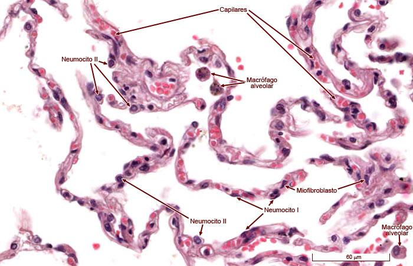

🫁 En los pulmones
El aire de los alvéolos contiene más oxígeno que la sangre que llega a los pulmones. Por esa diferencia de concentración, el oxígeno atraviesa la pared capilar y entra en la sangre.
Vasos microscópicos donde ocurre el intercambio de oxígeno, nutrientes y desechos entre la sangre y los tejidos.

Los capilares son los vasos sanguíneos más pequeños del cuerpo. Nacen de las arteriolas y continúan hacia las vénulas, formando una extensa red microscópica que llega prácticamente a todos los tejidos. A diferencia de las arterias y venas, su pared está formada por una sola capa de células, lo que permite el intercambio de oxígeno, nutrientes y desechos con las células del organismo.
La función principal de los capilares es permitir el intercambio de sustancias entre la sangre y las células. A través de su pared extremadamente delgada, el oxígeno y los nutrientes salen de la sangre para alimentar los tejidos, mientras que el dióxido de carbono y los productos de desecho ingresan nuevamente a la circulación para ser eliminados.
El intercambio de sustancias a través de los capilares ocurre principalmente mediante un proceso llamado difusión. Esto significa que las moléculas se desplazan de manera pasiva desde una zona donde están más concentradas hacia otra donde su concentración es menor.
Una forma sencilla de imaginarlo es pensar en el olor de un perfume dentro de una habitación. Al principio, las moléculas están concentradas cerca del frasco, pero poco a poco se dispersan hacia el resto del espacio, sin que nadie tenga que empujarlas.
El aire de los alvéolos contiene más oxígeno que la sangre que llega a los pulmones. Por esa diferencia de concentración, el oxígeno atraviesa la pared capilar y entra en la sangre.
La sangre que llega a los tejidos contiene más oxígeno que las células. Por eso, el oxígeno sale del capilar y se desplaza hacia las células, donde se utiliza para producir energía.
Las células producen dióxido de carbono como desecho. Como su concentración es mayor en los tejidos que en la sangre, el dióxido de carbono entra en los capilares y viaja hasta los pulmones para ser eliminado durante la respiración.
El intercambio ocurre principalmente en los capilares.
Capilares = Cambio.
Los capilares representan el punto de transición entre el sistema arterial y el sistema venoso. Después de realizar el intercambio de oxígeno, nutrientes y desechos, la sangre abandona los capilares y entra en pequeñas vénulas, las cuales se unen progresivamente para formar venas cada vez de mayor tamaño hasta regresar al corazón.
Muchas venas, especialmente las de las extremidades inferiores, poseen válvulas venosas. Estas válvulas son pliegues de la túnica íntima que funcionan como compuertas de un solo sentido, permitiendo que la sangre avance hacia el corazón e impidiendo que retroceda por efecto de la gravedad.
Cuando estas válvulas dejan de funcionar correctamente, parte de la sangre puede acumularse en las venas. Como consecuencia aumenta la presión en su interior, las venas se dilatan y aparecen las várices. En algunos casos también puede presentarse sensación de pesadez, hinchazón y cambios en la piel de las piernas.